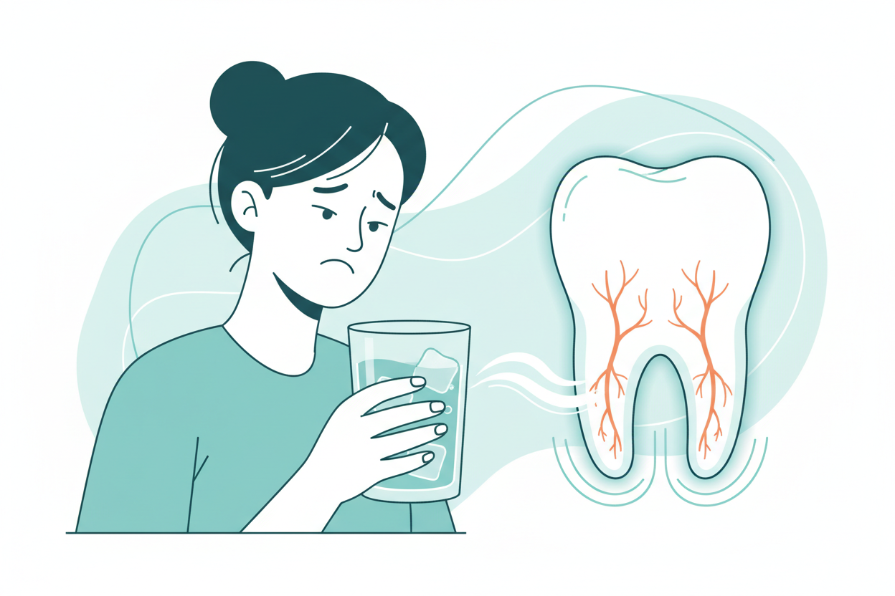

10 Oct 2026 · 4 min read · By Dr. Anish Bharti, M.D.S (Prosthodontics)
A sharp flash of pain when cold water hits a tooth is one of the most common complaints that walks into any dental clinic. It is also one of the most commonly ignored, usually for months, while the cause underneath keeps developing. Sensitivity is a signal with a short list of possible sources, and each source has a different fix.
Why it happens
Tooth enamel is the hardest material in the body, and underneath it sits a layer called dentine, which is full of microscopic tunnels leading to the nerve. When enamel wears thin or a gum line recedes, those tunnels get exposed and everything hot, cold or sweet travels straight toward the nerve. The pain is real, sharp, and gone in seconds. What the pain means depends on which of these is causing it.
The five common causes
Gum recession. Brushing hard with a stiff brush gradually scrubs the gums away from the neck of the tooth. The exposed root surface has no enamel at all, so it reacts to everything. Switch to a soft brush, brush gently at the gum line, and the progression stops.
Enamel wear. Heavy grinding at night, aggressive brushing, or a diet high in acids, from lemons to colas, thins the enamel over years. A night guard and a diet review usually sort this out.
A cavity. Decay eats toward the nerve, and cold sensitivity is often the first symptom before real pain starts. This is the cause you cannot fix at home, and the reason sensitivity on one particular tooth deserves an X-ray.
A cracked tooth. A hairline crack, common in teeth with old large fillings, lets cold reach the nerve in one specific direction. If the pain comes sharply when you bite on something and release, a crack is the likely answer.
Recent dental work. A new filling leaves a tooth sensitive for a couple of weeks while it settles. If it lasts beyond a month, or gets worse instead of better, go back and have it checked.
What helps, and what does not
Desensitising toothpastes genuinely work for generalised sensitivity from recession or wear. They block the tunnels in the dentine over a few weeks of daily use. They do almost nothing for a cavity or a crack, which is why two people with identical-sounding sensitivity can need completely different treatments. If one tooth is the problem, sensitivity toothpaste is a way of guessing instead of diagnosing.
In clinic, the fix might be a coating applied over the exposed root surface in five minutes, a small filling, or a night guard. Every one of them is easier now than after the pain becomes constant. If cold sensitivity on the same tooth has been going on for more than a few weeks, get it looked at rather than managed.
Sensitivity that keeps coming back?
A fifteen-minute exam finds the exact tooth and the exact cause. Sensitivity has treatments once you know the source.